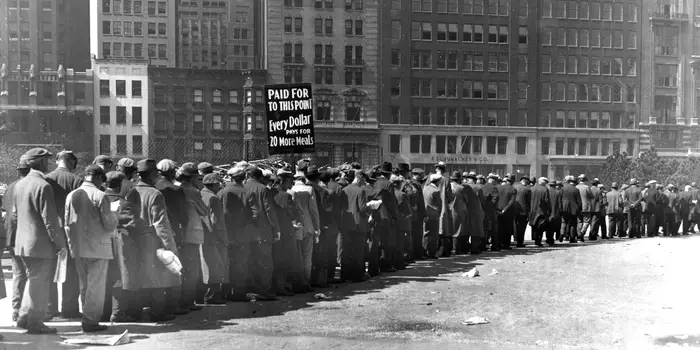

The Great Depression was a giant economic downturn that affected many countries.
It is most known for its effects in the USA stockmarket
Between 1929 and 1932, worldwide gross domestic product (GDP) fell by an estimated 15%.
By comparison, worldwide GDP fell by less than 1% from 2008 to 2009 during the Great Recession.
Some countries started to recover from the depression in mid 1930's
However, most countries didnt recover untill the begining of WWII
Alot of changes happend. People started making less money, taxes increased and profits fell.
More than 50% of the international trading stopped.
Unenployment in the US rose to 23%, and in some countries it rose to as much as 33%.
The Great Depression lasted 10 years in some countries. It didnt fully stop until 1939.
